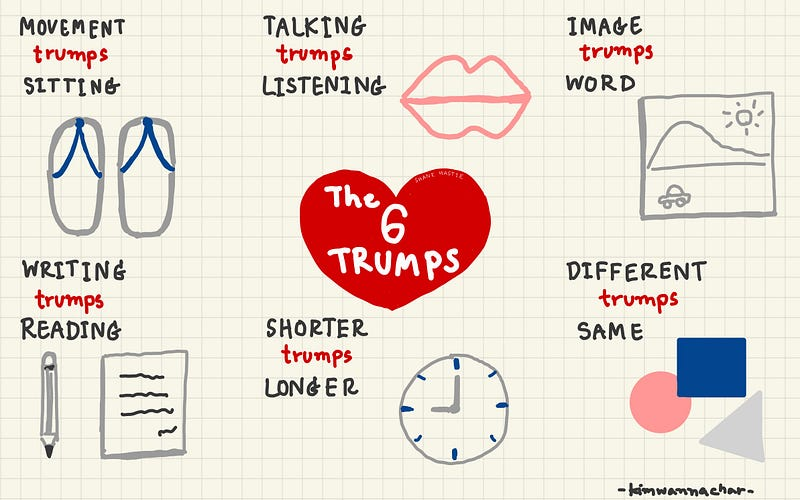

หลบโควิดแวะเรียน Facilitative#2@Home

เมื่อรัฐบาลประกาศให้เดือนพฤษภาคม มีวันหยุดได้ตามปกติ หลังจากที่มีความลุ้นเบาๆ ว่าจะได้เรียนไหมนะ ในที่สุด!!! ก็ได้มีโอกาสเรียน Facilitative#2 กับพี่อูค่ะ (หลังจากเลื่อนหนีโควิดกันไปก่อนหน้านี้ นึกว่าจะอดเรียนแล้ว)
ต้องขอขอบคุณพี่อู Chonlasith Jucksriporn ผู้สอนที่ไม่ยอมถอดใจไว้ ณ ที่นี้ด้วยค่ะ
ตอนลงเรียนเข้าใจเอาเองว่า น่าจะได้อะไรกลับไปเติมและดูแลทีมให้ทำงานอย่างมีความสุขละนะ แต่พอได้เรียนจริง โอ้โฮแฮะ “น้อยแต่มาก” ไอเดียบรรเจิดมาก เรียนจบอยากพุ่งตัวไปเปิดคอร์ส เลยทีเดียว ยังมีอารมณ์คุกรุ่นจากคลาสที่คิดสดในห้องเรียนอยู่เลย แต่ก่อนจะไปเปิดคอร์สสอนออนไลน์ ตอนนี้ร้อนวิชาขอถ่ายทอดเรื่องราวเป็นสรุปสิ่งที่ได้เรียนมาเป็นแบบฉบับกระเป๋าไปก่อนค่ะ
จากที่เรียนมา หัวใจของการ Facilitative เลยก็ คือ The 6 Trumps ค่ะ คืออะไรนะ คือ หลักการเจ๋งๆ ในการบริหารจัดการคลาสของเราค่ะ ซึ่งมีความเกี่ยวโยงกับการทำงานของสมองเราด้วยนะคะ ไปดูแต่ละข้อกันเลยค่ะ
1- MOVEMENT trumps SITTING
- สัญลักษณ์ คือ รองเท้า
- ให้ผู้เรียนได้มีการเคลื่อนไหว
เจ้าสมองของเราเนี่ย จะทำงานได้ดีถ้าเลือดไปเลี้ยงได้เพียงพอ เราจึงควรจัดกิจกรรมขยับเท่ากับออกกำลังกาย ให้กับผู้เรียน เพื่อกระตุ้นการไหลเวียนของเลือด
2- TALKING trumps LISTENING
- สัญลักษณ์ คือ ปาก
- ให้ผู้เรียนได้มีการพูด
การฟังจะเป็นการเรียนรู้ได้แค่ผิวๆ แต่การได้พูดคุยถึงเรื่องที่เรียน สมองจะทำความเข้าใจได้มากขึ้น
3- IMAGES trumps WORD
- สัญลักษณ์ คือ ภาพ
- ให้ผู้เรียนได้เห็นภาพ
1 ภาพแทนคำพูดได้นับ 1,000 คำ และยิ่งไปกว่านั้นสมองเราคิดเป็นภาพ ถ้าเรานำภาพมาเป็นสื่อการสอน สมองก็จะจดจำข้อมูลได้ง่ายขึ้น
4- WRITING trumps READING
- สัญลักษณ์ คือ ปากกา หรือดินสอ
- ให้ผู้เรียนได้เขียนได้จด
ตอนที่เขียนสมองจะจดจ่อ ซึ่งการจดจ่อจะทำให้จำแม่นมากขึ้น เพราะการเขียนนั้นเจ้าสมองจะใช้งานส่วน Muscle Memory ซึ่งทำให้จำได้นานกว่า
5- SHORTER trumps LONGER
- สัญลักษณ์ คือ นาฬิกา
- ให้ผู้เรียนได้รับเนื้อหาไปสะสมทีละนิด
สมองชอบเก็บข้อมูลเป็นช่วงสั้นๆ สะสมทีละนิด ทำให้จำได้ดีกว่าการอัดข้อมูลยาวๆ
6- DIFFERENT trumps SAME
- สัญลักษณ์ คือ รูปทรงต่าง ๆ ที่ แตกต่างกัน
- ให้ผู้เรียนได้เห็นความแตกต่างของการนำเสนอเนื้อหา
สมองเรามีส่วนที่เรียกว่า Pinkie Brain มีขนาดเท่านิ้วของเรา จะทำหน้าที่บอกให้เราไม่สนใจ และเพิกเฉยสิ่งที่เหมือนเดิมซ้ำ ๆ กัน และนั่นจะทำให้การเรียนรู้ลดลง
เห็น The 6 Trumps ที่เชื่อมโยงกับการทำงานของสมองกันไปแล้ว ก็ยังมีประเด็นที่น่าสนใจเกี่ยวกับสมองอีกค่ะ นั่นคือ ความเครียดค่ะ “ความเครียดจะทำให้ความจำลดลง ตามระดับความเข้มข้นของความเครียดค่ะ บางรายเครียดจนถึงขั้นรุนแรงแบบความจำเสื่อม หรือความจำหายไปได้เลย”
ซึ่งมาถึงตรงนี้ พี่โอ (TA) ก็ช่วยเสริมให้ว่า ต้องทำให้บรรยากาศในคลาสนั้นเป็น It’s OK environment ค่ะ เอ๊ะ ยังไงนะ? แบบนี้ค่ะ
It’s OK ที่จะกล้าถาม,
It’s OK ที่จะแสดงความคิดเห็น,
It’s OK ที่จะไม่เห็นด้วย
จากนั้นก็มาเรียน 4Cs Map กันต่อค่ะ
C1 — Connections : เชื่อมโยงเนื้อหาเข้ากับผู้เรียน
C2 — Concepts : เนื้อหา, ประเด็น, แนวคิด
C3 — Concrete Practice : ให้ผู้เรียนได้ทดลองคิด, ลองทำ และฝึกฝน
C4 — Conclusions : สรุปสิ่งที่เรียนรู้
พอเรียนเสร็จเราก็ได้ออกแบบคลาสของเราสดๆ กันเลยค่ะ สนุกสนานกันมาก
- 4Cs Map เป็นเพียง Guide line: การออกแบบ Class ไม่จำเป็นต้องยึดลำดับของ 4Cs Map ค่ะ ขึ้นอยู่กับ Story Telling ของผู้สอนเลยค่ะ ว่าอยากให้คลาสออกมาเป็นแบบไหน หรืออาจจะใช้ C2 หรือ Cอื่น ๆ ซ้ำได้ค่ะ (สำหรับเราสีสันมันเริ่มตรงนี้เลย)
ต่อไปเราก็ได้เรียนเทคนิคเพิ่มเติมเกี่ยวกับความจำกันค่ะ
1- Primacy สิ่งที่เจอเป็นอย่างแรก
2- Recency สิ่งที่เจอล่าสุด
3- Linked สิ่งที่เชื่อมโยงเข้ากับประสบการณ์
4- Written สิ่งที่ถูกเขียน
5- Jolt สิ่งที่กระทบกระเทือนจิตใจ ไม่ว่าจะเป็นเรื่องดีหรือไม่ดี
6- 6X 6W สิ่งที่ได้เรียนรู้ซ้ำ ๆ 6 ครั้ง ด้วย 6 วิธีการที่ต่างกัน
อีกนิดก่อนออกแบบคลาส
- กำหนดจุดประสงค์การเรียนรู้ : ก่อนจะเริ่มไปที่ตอนจบก่อนว่าผู้เรียนจะได้อะไรไปนะ
- สอนเท่าที่จำเป็น : NEED TO KNOW | NICE TO KNOW เหลือไว้ให้ผู้เรียนไปค้นคว้าเองบ้าง
- ประเมินผ่านกิจกรรม : ผู้เรียนสามารถสะท้อนความเข้าใจของสิ่งที่สอนผ่านกิจกรรมต่าง ๆ เป็นตัวชี้วัด
- ให้ผู้เรียนตัดสินใจเอง : ว่าสามารถนำความรู้ไปประยุกต์ทำอะไรได้บ้าง
- ใช้ Interactive Slide : ออกแบบ Slide ที่ให้ผู้สอนและผู้เรียนมีการสื่อสารโต้ตอบระหว่างกันและกัน
- Tool ก็สำคัญ : หยิบใช้ให้เหมาะสมกับภาพรวมของคลาสในแต่ละส่วน เอาความต้องการของผู้เรียนเป็นที่ตั้ง
เชื่อว่าในชีวิตประจำวัน หรือการทำงานของเราต้องมีการสอน และแชร์ความรู้กันไม่มากก็น้อยค่ะ
ส่วนตัวที่ได้เรียนมาจาก Class Facilitative#2 ก็ได้แนวทางเพื่อนำไปใช้กับงานเยอะเหมือนกันค่ะ เช่น ตอนจัด Session Get Requirement (Product Discovery), Share User Story to project member, Transfer Knowledge to Production Support เป็นต้น
หรือแม้แต่การเรียนรู้อะไรใหม่ๆ ก็จะสามารถฝึกฝนตัวเองได้มีประสิทธิภาพมากขึ้น เพราะเรามีหลักการ The 6 Trumps และเข้าใจการทำงานของสมองกันละ เย้ๆ